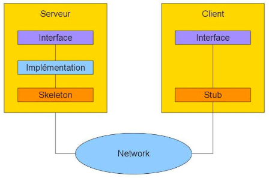

Java est un langage orienté objet qui utilise un compilateur (javac) puis une machine virtuelle compatible toutes plateformes JVM Java Virtual Machine pour interpréter le Byte code. De ce fait, c'est un langage offrant une grande portabilité. C’est un langage à la fois compilé et interprété. Il est donc plus rapide que Python (interprété) mais plus lent que C++ (compilé). java -version en ligne de commande permet de vérifier que java est installé.

Table des matières :
- Exécuter Java au Terminal
- Les dates
- La programmation réseau
- Programmation client-serveur
- Les proxys
- Le mécanisme RMI
- JMS
- Les services Web
Exécuter Java au terminal
Pour exécuter un programme Java en utilisant le terminal, il faut d'abord se rendre dans le dossier comportant le fichier, puis compiler le programme avec la commande
javac monFichier.javaLe fichier se transforme alors en binaire exécutable par la Machine Virtuelle Java : monFichier.class. Pour exécuter ce programme il reste maintenant à utiliser la commande
java monFichierLes dates
L'utilisation de la classe Date est obsolète. Il est préférable d'utiliser la classe GregorianCalendar qui hérite de la classe abstraite Calendar.
On peut afficher le timestamp du moment sans formattage particulier en utilisant
new GregorianCalendar().getTime()Pour instancier une date à la date du jour, on utilise
GregorianCalendar date = new GregorianCalendar();Pour instancier une date à la date du 03/06/2018
GregorianCalendar date = new GreogorianCalendar(2018,05,03);car les mois sont notés de 0 à 11.
Les différents éléments de date sont les suivants :
date.get(Calendar.YEAR);
date.get(Calendar.MONTH);
date.get(Calendar.DAY_OF_MONTH);
date.get(Calendar.DAY_OF_WEEK);On remarque que Calendar.YEAR concerne la classe Calendar et non l’objet date. On peut modifier la date prise en compte dans l’objet date de la façon suivante :
date.set(Calendar.YEAR, annee);
date.set(Calendar.MONTH, mois);
date.set(Calendar.DAY_OF_MONTH, jour);
date.set(Calendar.DAY_OF_WEEK, jourDeLaSemaine);Toutefois, si on veut afficher correctement la date, on peut utiliser
System.out.printf("%04d,%02d,%02d,%02d\n",annee,mois,jour,jourSemaine);ou encore formatter de la façon suivante :
SimpleDateFormat formattage = new SimpleDateFormat("yyyy-MM-dd-EEEE");
System.out.println(formattage.format(date.getTime()));Exemple de saisie clavier de date puis affichage de la date saisie :
Scanner saisie = new Scanner(System.in);
System.out.println("entrez année");
int annee = saisie.nextInt();
System.out.println("entrez mois");
int mois = saisie.nextInt();
System.out.println("entrez jour");
int jour = saisie.nextInt();
GregorianCalendar date = new GregorianCalendar(annee,mois,jour);
date.set(Calendar.MONTH, mois-1);
SimpleDateFormat formattage = new SimpleDateFormat("yyyy-MM-dd-EEEE");
System.out.println(formattage.format(date.getTime()));La programmation réseau
Rappels sur les réseaux
La communication réseau est initialement définie par le modèle OSI en 7 couches. Toutefois, la plupart des logiciels reposent sur le modèle TCP/IP en 4 couches : réseau, Internet, transport, application. C'est dans cette dernière couche du modèle TCP/IP que se positionne Java.
Notons que par défaut les principaux protocoles de transfert utilisent les ports suivants :
- http : port 80
- ftp : port 20 ou 21
- smtp : port 25
La classe InetAddress
Pour manipuler des adresses IP, on utilise la classe InetAddress. Par exemple pour obtenir l'adresse IP d'un site connu par son nom de domaine :
import java.net.*;
try{
InetAddress adresse = InetAddress.getByName("meteocentrale.ch");
}catch (UnknownHostException e) {
e.printStackTrace();
}A noter que dans le cas de l'adresse locale, on peut définir indifféremment :
import java.net.*;
try{
InetAddress adresse = InetAddress.getByName("localhost"); // ou
InetAddress adresse = InetAddress.getLocalHost();
}catch (UnknownHostException e) {
e.printStackTrace();
}Les méthodes associées à la classe InetAddress nécessitent également la gestion de UnknownHostException :
| Objectif | Code |
|---|---|
| nom de l'hôte (client) | adresse.getHostName() |
| adresse IP | adresse.getHostAddress() |
| teste si l'adresse est de type boucle locale | adresse.isLoopbackAddress() |
Certains sites Internet peuvent avoir plusieurs adresses IP :
import java.net.*;
try{
InetAddress[] adresses = InetAddress.getAllByName("amazon.fr");
System.out.println("Toutes les adresses IP : ");
for(InetAddress valeur : adresses)
System.out.println(" - " + valeur.getHostAddress());
}catch(UnknownHostException e) {
e.printStackTrace();
}La classe URL
On peut également utiliser la classe URL pour récupérer les données d'un site Internet :
import java.io.*;
import java.net.*;
try {
URL url = new URL("http://www.meteofrance.fr");
}catch(MalformedURLException e) {
e.printStackTrace();
}Les méthodes associées à la classe URL nécessitent également la gestion de MalformedURLException.
| Objectif | Code |
|---|---|
| nom du site | url.getAuthority() |
| port par défaut | url.getDefaultPort() |
| nom de l'hébergeur | url.getHost() |
| numéro de port spécifié | url.getPort() |
| protocole | url.getProtocol() |
Lorsque url.getPort() renvoie -1, cela signifie que le port n'a pas été spécifié dans l'URL.
Pour vérifier qu'une saisie utilisateur correspond à une url, on peut par exemple utiliser la condition :
if(host.matches("[a-zA-Z\\.]+"))
Programmation client-serveur
Les sockets sont des API permettant de gérer les communications entre programmes. La communication de plusieurs machines sur un réseau nécessite donc la connaissance d'adresses, de ports, de protocoles et l'utilisation de sockets. Les sockets permettent de se connecter à une machine distante, de recevoir et envoyer des données, de fermer une connexion établie, d'attendre une connexion de l'extérieur, d'écouter les communications entrantes. Une même socket sert aussi bien à envoyer qu'à recevoir des communications. Notons également que le protocole TCP/IP s'appuie sur les sockets.
Une socket est identifiée de manière unique par l'adresse IP de la machine suivie du numéro de port utilisé, ce dernier étant compris entre 1024 et 65536.
Java fait la différence entre deux types de sockets : côté client et côté serveur.
Une socket côté client permet de se connecter à une machine distante afin de communiquer avec elle. L'utilisation de socket côté client se déroule ainsi :
- demande de connexion avec le serveur
- ouverture de la communication avec le serveur
- envoi des messages
- fermeture de la connexion
Un serveur utilise une socket spécifique pour recevoir des demandes de connexion, puis crée une socket de communication pour échanger avec le client. L'utilisation de socket côté serveur se déroule ainsi :
- attente de demande de connexion venant d'un client
- ouverture de la communication avec le client
- traitement des messages
- fermeture de la connexion
Les sockets travaillent en full-duplex, i.e. le client et le serveur peuvent envoyer et recevoir des signaux simultanément. Il n'y a donc aucune attente.
Les différents modes de connexion
Le mode connecté
En mode connecté, deux sockets établissent une communication durable qui permet d'éviter de transmettre l'identité de la socket destinatrice à chaque envoi. Dans ce cas, un des programmes prend le rôle du serveur et l'autre le rôle du client. Le serveur est donc vu comme un programme rendant des services aux clients.
La création d'une socket côté serveur utilise la classe ServerSocket. Le serveur attend ensuite les demandes de connexion en utilisant la fonction bloquante accept() i.e. qu'elle ne libère pas le programme tant qu'elle n'a pas reçu de demande de connexion.
La création d'une socket côté client utilise la classe Socket.
Les méthodes de la classe Socket permettant d'obtenir des informations sur la connexion et nécessitent également la gestion de IOException :
| Instruction | Résultat |
|---|---|
socket_client.getInetAddress() | fournit l'adresse IP distante |
socket_client.getLocalAddress() | fournit l'adresse IP locale |
socket_client.getPort() | fournit le nmr de port distant |
socket_client.getLocalPort() | fournit le nmr de port local |
La machine virtuelle Java ferme les sockets non utilisés à la fin de l'exécution du programme. Toutefois, le nombre de sockets ouvertes par un programme est limité, ce qui conduit à des erreurs quand cette limite est atteinte. La méthode close() permet de fermer la connexion.
Le mode non connecté
En mode non connecté, le destinataire de la socket est précisé à chaque envoi. La communication utilise dans ce cas la classe DatagramSocket.
Transmission d'une chaîne de caractères en mode connecté :
Côté serveur :
import java.io.*;
import java.net.*;
public class ServerTCP {
public static void main(String[] args) {
try {
// creation socket serveur communication sur le port 5555
ServerSocket srv = new ServerSocket(5555);
// attente demande de connexion venant du client puis creation socket connexion
Socket conn = srv.accept();
// communication entrante en provenance du client
DataInputStream entrant = new DataInputStream(conn.getInputStream());
System.out.println("Message reçu : " + entrant.readUTF());
// communication sortante vers le client
DataOutputStream sortant = new DataOutputStream(conn.getOutputStream());
sortant.writeUTF("Voici votre information");
// fermeture connexion
entrant.close();
sortant.close();
conn.close();
srv.close();
} catch (IOException e) {
e.printStackTrace();
}
}
}Côté client :
import java.io.*;
import java.net.*;
public class ClientTCP {
public static void main(String[] args) {
try {
// creation socket client communication sur le port 5555 en local
Socket clt = new Socket("localhost", 5555);
// communication sortante vers le serveur
DataOutputStream sortant = new DataOutputStream(clt.getOutputStream());
sortant.writeUTF("Je cherche une information");
// communication entrante en provenance du serveur
DataInputStream entrant = new DataInputStream(clt.getInputStream());
System.out.println("Message reçu : "+ entrant.readUTF());
// fermeture connexion
sortant.close();
entrant.close();
clt.close();
} catch (IOException e) {
e.printStackTrace();
}
}
}Les méthodes writeUTF() et readUTF() détectent automatiquement la taille des String dans un flux. Il n'est donc pas nécessaire de la transmettre avec le message. La quantité d'information transmise est donnée par message.length() si on note message la variable représentant le message reçu.
Il est également possible d'utiliser les instructions write(Byte[] b) et read(Byte[] b) au lieu de writeUTF() et readUTF(). Dans ce cas, l'expéditeur doit envoyer la taille du String en premier pour informer le récepteur de la quantité de données à allouer en mémoire. Il faut créer un buffer pour accueillir le message reçu. Les String sont convertis en Bytes par la méthode .getBytes() avant d'être envoyés, et à la réception l'instruction entrant.read(buffer) ne renvoie pas le message mais la quantité d'information reçue. Il faut alors créer un new String(buffer) pour renvoyer l'information reçue.
Transmission d'un entier en mode connecté :
Côté serveur :
import java.io.*;
import java.net.*;
public class ServerTCP {
public static void main(String[] args) {
try {
ServerSocket srv = new ServerSocket(5555);
Socket conn = srv.accept();
DataInputStream entrant = new DataInputStream(conn.getInputStream());
int message= entrant.readInt();
System.out.println("Message received: " + message);
entrant.close();
conn.close();
srv.close();
} catch (IOException e) {
e.printStackTrace();
}
}
}Côté client :
import java.io.*;
import java.net.*;
public class ClientTCP {
public static void main(String[] args) {
try {
Socket sock = new Socket("localhost", 5555);
DataOutputStream sortant = new DataOutputStream(sock.getOutputStream());
sortant.writeInt(1420);
sortant.close();
sock.close();
} catch (IOException e) {
e.printStackTrace();
}
}
}Transmission d'un message sous forme d'objet en mode connecté :
Côté serveur :
import java.io.*;
import java.net.*;
public class ServerTCP {
public static void main(String[] args) {
try {
// creation socket serveur communication sur le port 5555
ServerSocket srv = new ServerSocket(5555);
// attention demande connexion puis creationsocket serveur connexion
Socket conn = srv.accept();
// communication entrante, les data sont placees dans un objet
// transforme en Message, puis en String pour affichage
DataInputStream dataEntrant = new DataInputStream(conn.getInputStream());
ObjectInputStream objetEntrant = new ObjectInputStream(dataEntrant);
Message msg = (Message)objetEntrant.readObject();
System.out.println("Message reçu : " + msg.toString());
// fermeture de connexion
objetEntrant.close();
dataEntrant.close();
conn.close();
srv.close();
} catch (IOException e) {
e.printStackTrace();
} catch (ClassNotFoundException e) { // doit apparaitre
e.printStackTrace();
}
}
}Côté client :
import java.io.*;
import java.net.*;
import java.util.*;
public class ClientTCP {
public static void main(String[] args) {
Message msg = new Message("steph",new Date(), "hello world");
try {
// creation socket client en local sur le port 5555
Socket clt = new Socket("localhost", 5555);
// communication sortante, les data sont placees dans un objet transmis sous forme de Message
DataOutputStream dataSortant = new DataOutputStream(clt.getOutputStream());
ObjectOutputStream objetSortant = new ObjectOutputStream(dataSortant);
objetSortant.writeObject(msg);
// fermeture de connexion
objetSortant.close();
dataSortant.close();
clt.close();
} catch (IOException e) {
e.printStackTrace();
}
}
}et la classe Message utilisée :
import java.io.*;
import java.util.*;
public class Message implements Serializable{
// un objet de type Message doit etre serialisable pour pouvoir etre transmis
String name;
Date date;
String msg;
public Message(String name, GregorianCalendar date, String msg){
this.name = name;
this.date = date;
this.msg = msg;
}
@Override
public String toString(){
return "msg=[ " + name + " , " + date.getTime()+" , "+msg +" ]";
}
}Serveur délivrant un service (fournir la date) à tous les clients qui se connectent :
Côté serveur :
import java.io.*;
import java.net.*;
import java.util.*;
public class ServerTCP {
public static void main(String[] args) {
try {
ServerSocket srv = new ServerSocket(5555);
while (true) {
Socket conn = srv.accept();
DataOutputStream sortant = new DataOutputStream(conn.getOutputStream());
sortant.writeUTF("Server Date: " + (new Date()).toString());
sortant.close();
conn.close();
}
} catch (IOException e) {
e.printStackTrace();
}
}
}Côté client :
import java.io.*;
import java.net.*;
public class ClientTCP {
public static void main(String[] args) {
try {
Socket clt = new Socket("localhost", 5555);
DataInputStream entrant = new DataInputStream(clt.getInputStream());
System.out.println(entrant.readUTF());
entrant.close();
clt.close();
} catch (IOException e) {
e.printStackTrace();
}
}
}Transmission d'une chaîne de caractères en mode non connecté :
Côté récepteur :
import java.io.*;
import java.net.*;
public class RecepteurUDP {
public static void main(String[] args) {
// creation d'un buffer pour contenir le message a recevoir
byte[] buffer = new byte[256];
try {
// creation de la socket de reception
DatagramSocket rcp = new DatagramSocket(5555);
// creation et reception du paquet
DatagramPacket packet = new DatagramPacket(buffer, buffer.length);
rcp.receive(packet);
System.out.println("Message recu = " + new String(buffer));
// fermeture de connexion
rcp.close();
} catch (IOException e) {
e.printStackTrace();
}
}
}Côté émetteur :
import java.io.*;
import java.net.*;
public class EmetteurUDP {
public static void main(String[] args) {
String message = "rendez-vous à 13h.";
try {
// creation de la socket emettrice
DatagramSocket emt = new DatagramSocket();
// recuperation de l'adresse IP
InetAddress adresseIP = InetAddress.getByName("localhost");
// creation du packet et envoi du message
DatagramPacket packet = new DatagramPacket(message.getBytes(), message.getBytes().length, adresseIP, 5555);
emt.send(packet);
// fermeture connexion
emt.close();
} catch (IOException e) {
e.printStackTrace();
}
}
}Transmission d'un entier en mode non connecté :
Côté récepteur :
import java.io.*;
import java.net.*;
import java.nio.*;
public class RecepteurUDP {
public static void main(String[] args) {
byte[] buffer = new byte[256];
try {
DatagramSocket rcp = new DatagramSocket(5555);
DatagramPacket packet = new DatagramPacket(buffer, buffer.length);
rcp.receive(packet);
// conversion du message reçu en byte[] vers un entier
int entier = ByteBuffer.wrap(buffer).getInt();
System.out.println("Message recu : " + entier);
// fermeture de connexion
rcp.close();
} catch (IOException e) {
e.printStackTrace();
}
}
}Côté émetteur :
import java.io.*;
import java.net.*;
import java.nio.*;
public class EmetteurUDP {
public static void main(String[] args) {
// transformation de l'entier en byte[]
ByteBuffer tabByte = ByteBuffer.allocate(4);
byte[] buffer = tabByte.putInt(1402).array();
try {
DatagramSocket emt = new DatagramSocket();
InetAddress adresseIP = InetAddress.getByName("localhost");
DatagramPacket packet = new DatagramPacket(buffer, buffer.length, adresseIP, 5555);
emt.send(packet);
} catch (IOException e) {
e.printStackTrace();
}
}
}Tester les ports disponibles du client
Pour tester les 1024 premiers ports du client à l'aide de cette classe :
for(int i = 1; i <= 1024; i++){
try {
Socket soc = new Socket("127.0.0.1", i);
System.out.println("ports autorisés sur la machine : " + i);
} catch (UnknownHostException e) {
e.printStackTrace();
}catch (IOException e) {
System.out.println("ioexception");
// le port n'est pas ouvert ou n'est pas autorisé
}
}Pour spécifier sur quel port du client le serveur devra répondre :
try {
//Nous spécifions que la réponse devra se faire par ce chemin
InetAddress lo = InetAddress.getByName("188.165.53.185");
//Le fait de mettre 0 dans le numéro de port de réponse
//informe que n'importe quel numéro est accepté
Socket soc = new Socket("www.adret-attitude.ch", 80, lo, 0);
}catch (UnknownHostException e) {
e.printStackTrace();
} catch (Exception e) {
e.printStackTrace();
}Communiquer avec un serveur
On utilise l'objet HttpURLConnection.
Les flux BufferedInputStrean et BufferedOutputStrean permettent de gagner en performance plutôt que de travailler directement avec les sockets.
Les proxys
Un proxy constitue une autre façon de se connecter à un serveur. Le proxy est un intermédiaire faisant le lien entre le client et le serveur.
import java.io.IOException;
import java.net.InetSocketAddress;
import java.net.Proxy;
import java.net.Socket;
import java.net.SocketAddress;
//On crée une adresse correspondant à notre proxy
SocketAddress proxyAddress = new InetSocketAddress("10.10.10.10", 8080);
//On instancie la classe Proxy avec le type souhaité
Proxy proxy = new Proxy(Proxy.Type.SOCKS, proxyAddress);
//On crée notre socket utilisant le proxy
Socket s = new Socket(proxy);
//On crée l'adresse que l'on souhaite atteindre via le proxy
SocketAddress remote = new InetSocketAddress("www.adret-attitude.ch", 80);
try {
//On connecte le tout !
s.connect(remote);
} catch (IOException e) {
e.printStackTrace();
}| Objectif | Code |
|---|---|
| port côté serveur | s.getPort() |
| port côté client | s.getLocalPort() |
| nom hôte distant | s.getInetAddress().getHostName() |
| adresse hôte distant | s.getInetAddress().getHostAddress() |
| adresse socket hôte distant | s.getRemoteSocketAddress() |
try {
Socket s = new Socket("www.adret-attitude.ch", 80);
System.out.println("Port de communication côté serveur : " + s.getPort());
System.out.println("Port de communication côté client : " + s.getLocalPort());
System.out.println("Nom de l'hôte distant : " + s.getInetAddress().getHostName());
System.out.println("Adresse de l'hôte distant : " + s.getInetAddress().getHostAddress());
System.out.println("Adresse socket de l'hôte distant : " + s.getRemoteSocketAddress());
} catch (UnknownHostException e) {
e.printStackTrace();
} catch (IOException e) {
e.printStackTrace();
}Le mécanisme RMI
Le RMI permet d'appeler du code à distance, en créant un objet distant sur une machine serveur qui est rendu accessible aux autres machines. Il faut définir :
- l'interface de l'objet distant
- l'implémentation
- l'application serveur
- l'application client
Le client peut récupérer une représentation locale de l'objet distant appelée talon ou stub, qui utilise une représentation distante appelée skeleton. Le client utilise alors ce talon comme si l'objet distant était local. Ainsi, le stub sert de lien côté client avec l'interface alors que le skeleton sert de lien côté serveur avec l'interface. Le registry qui définit les liens entre stub et skeleton est créé en ligne de commande par l'instruction rmiregistry.
Cette technique offre pour avantages de mettre à jour le client de manière transparente et de masquer l'exécution distante du code tout en travaillant comme si l'exécution était locale.
L'interface est l'entité partagée par le client et le serveur, donc présente des deux côtés.
import java.rmi.*;
public interface Hello extends Remote {
public void sayHello(String nom) throws RemoteException;
}Côté serveur
L'implémentation de l'interface se fait côté serveur et ne doit pas être présente côté client sous peine de perdre l'utilité de RMI. et l'implémentation côté serveur hérite de l'interface.
import java.rmi.server.*;
import java.rmi.*;
public class HelloImpl extends UnicastRemoteObject implements Hello {
public HelloImpl() throws RemoteException {
super();
}
public void sayHello(String nom) throws RemoteException {
System.out.println("Hello "+nom");
}
}Dans la classe principale côté serveur, il faut instancier l'implémentation, puis le skeleton est défini pour transmettre les appels à l'objet distant.
import java.rmi.*;
import java.net.*;
class HelloServer {
public static void main(String[] args) {
try {
HelloImpl obj = new HelloImpl();
Naming.rebind("Hello", obj);
} catch (RemoteException e) {
e.printStackTrace();
} catch (MalformedURLException e) {
e.printStackTrace();
}
}
}Côté client
Le stub implémente l'interface de l'objet distant pour le clientL'appel côté client d'une méthode d'un objet distant consiste à obtenir une référence sur l'objet distant puis à appeler la méthode à partir de cette référence.
import java.rmi.*;
import java.net.*;
class HelloClient {
public static void main(String[] args) {
try {
// arg[0] represente l'url qui sera le 1er argument entre en ligne de commande
// lors de l'exécution java HelloClient localhost:5555
Hello obj = (Hello) Naming.lookup("//"+args[0]+"/Hello");
obj.sayHello("Mike");
} catch (RemoteException e) {
e.printStackTrace();
} catch (NotBoundException e) {
e.printStackTrace();
} catch (MalformedURLException e) {
e.printStackTrace();
}
}
}Notons que l'application cliente devra également gérer la synchronisation des appels à distance à l'aide de threads pour éviter le blocage du système.
Exemple d'une boite de messagerie : le client peut déposer un message après s'être inscrit et consulter son message.
L'interface :
import java.rmi.*;
public interface Boite extends Remote{
public int inscrire() throws RemoteException;
public void envoieMessage(int nclient, Message mess) throws RemoteException;
public Message getMessage(int nclient) throws RemoteException;
}Côté serveur :
La classe Message :
import java.util.*;
import java.io.*;
public class Message implements Serializable{
public String nom;
public String message;
public GregorianCalendar date;
public Message(String nom, GregorianCalendar date, String message) {
this.nom = nom;
this.date = date;
this.message = message;
}
@Override
public String toString(){
return "Le "+date.getTime()+" "+nom+" a écrit : "+message;
}
}l'implémentation :
import java.rmi.*;
import java.rmi.server.*;
import java.util.*;
public class BoiteMessageImpl extends UnicastRemoteObject implements Boite{
public static int nmrClient;
public Vector vectMess;
public BoiteMessageImpl() throws RemoteException{
super();
nmrClient = 0;
vectMess = new Vector(10);
}
public int inscrire() throws RemoteException{
return nmrClient++;
}
public void envoieMessage(int nclient, Message mess) throws RemoteException{
vectMess.add(nclient, mess);
}
public Message getMessage(int nclient) throws RemoteException {
return (Message)vectMess.get(nclient);
}
}et la classe principale :
import java.rmi.*;
import java.net.*;
public class BoiteServer {
public static void main(String[] args){
try{
BoiteMessageImpl obj = new BoiteMessageImpl();
Naming.rebind("Boite", obj);
}catch(RemoteException e){
e.printStackTrace();
}catch(MalformedURLException e){
e.printStackTrace();
}
}
}Côté client :
La classe principale :
import java.rmi.*;
import java.net.*;
import java.util.*;
public class BoiteClient {
public static void main(String[] args){
try{
Boite boiteMess = (Boite)Naming.lookup("//"+args[0]+"/Boite");
int nclient = boiteMess.inscrire();
Message m = new Message("Mike", new GregorianCalendar(), "hello world");
boiteMess.envoieMessage(nbclient, m);
System.out.println("Dernier message : "+boiteMess.getMessage(nclient).toString());
}catch(RemoteException e){
e.printStackTrace();
}catch(NotBoundException e){
e.printStackTrace();
}catch(MalformedURLException e){
e.printStackTrace();
}
}
}Le mécanisme JMS
JMS Java Message Service est une interface de programmation API spécialisée dans la création, l'envoi et la lecture de messages. JMS s'apparente donc à un service de messagerie permettant d'envoyer des messages d'une application à une autre sur un poste distant. Les particularités de JMS sont les suivantes :
- asynchrone, un message arrivera au client sans qu'il n'ait fait de requête
- fiable, il s'assure que le message soit délivré
La particularité de la communication par message vient du fait que les messages sont envoyés sur un objet intermédiaire MOM Message Oriented Middleware, et le consumer doit venir les chercher. Des bus gèrent les transports de messages vers les objets intermédiaires. Ce mode de communication indirect permet de mettre en place des services avancés :
- transaction : envoi et réception groupés
- persistance : retransmission des messages en cas de panne
- multicast : communication de groupe
- log : trace des échanges
- gestion des droits d'accès
JMS repose sur deux modes de communication principaux : la communication point-à-point et la communication événementielle. Chacun de ces modes de communication utilise des objets intermédiaires par lesquels transitent les messages et accessibles via un objet JMSConnectionFactory. De ce fait, il est inutile d'établir une connexion entre un émetteur et un récepteur.
Dans la communication point-à-point, l'objet intermédiaire est une file d'attente (queue). Plusieurs senders peuvent envoyer sur la même file d'attente mais un seul receiver peut voir le message. On parle de communication N à 1. La communication est asynchrone et mémorisée.
Dans la communication événementielle, l'objet intermédiaire est un sujet (topic). Les publishers envoient leurs messages sur un topic. Les subscribers s'inscrivent au topic pour recevoir les messages publiés sur ce topic. Plusieurs publishers peuvent envoyer des messages sur le même topic et plusieurs subscribers peuvent consulter les messages du topic.
JMS contient les classes suivantes :
- le fournisseur est l'objet intermédiaire qui jour le rôle de plateforme de messagerie
- le publisher/sender créé des messages
- le subscriber/receiver lit les messages
- le message contient des informations communiquées entre clients
- les objets administrés sont configurés par un administrateur
Il existe différents types de fournisseurs, comme par exemple ActiveMQ de Apache. Les objets administrés ne sont pas traités dans ce résumé. Nous allons donc présenter les classes Publisher/Sender, Subscriber/Receiver et Message.
Construction d'un service de messagerie Topic avec JMS 1.1
Côté Publisher :
import java.util.*;
import javax.naming.*;
import javax.jms.*;
public class Publisher {
public static void main(String[] args) {
try {
// initialisation, le detail des proprietes se trouve dans jndi.properties
Properties props = new Properties();
InitialContext ctx = new InitialContext();
// connexion au provider et à l'objet intermediaire
ConnectionFactory factory = (ConnectionFactory) ctx.lookup("Fournisseur");
// creation et acces au topic
Topic topic = (Topic) ctx.lookup("MyTopic");
// connexion de l'utilisateur au bus
Connection conn = factory.createConnection();
// creation de session
Session sess = conn.createSession(false, Session.AUTO_ACKNOWLEDGE);
// creation d'un objet emetteur
MessageProducer producer = sess.createProducer(topic);
// topicPublisher.setDeliveryMode(DeliveryMode.NON_PERSISTENT);
// publication d'un message "hello world"
TextMessage message = sess.createTextMessage();
message.setText("hello world");
producer.send(message);
// fermeture de connexion
conn.close();
} catch (Exception e) {
e.printStackTrace();
}
}
}Côté Subscriber :
import javax.naming.*;
import javax.jms.*;
public class Subscriber {
public static void main(String[] args) {
try {
// initialisation
InitialContext ctx = new InitialContext();
// connexion au provider et à l'objet intermediaire
ConnectionFactory factory = (ConnectionFactory) ctx.lookup("ConnectionFactory");
// creation et acces au topic
Topic topic = (Topic) ctx.lookup("MyTopic");
// connexion de l'utilisateur au bus
Connection conn = factory.createConnection();
// creation de session
Session sess = conn.createSession(false, Session.AUTO_ACKNOWLEDGE);
// creation d'un objet destinataire
MessageConsumer consumer = sess.createConsumer(topic);
// lecture d'un message, receive est une fonction bloquante
conn.start();
TextMessage message = (TextMessage) consumer.receive();
System.out.println("message lu : " + message.getText());
// fermeture connexion
conn.close();
} catch( Exception e ) {
e.printStackTrace();
}
}
}Construction d'un service de messagerie Queue avec JMS 1.1
Côté Sender
import javax.naming.*;
import javax.jms.*;
public class Sender {
public static void main(String[] args) {
try {
// initialisation
InitialContext ctx = new InitialContext();
// connexion au provider et à l'objet intermediaire
ConnectionFactory factory = (ConnectionFactory) ctx.lookup("Fournisseur");
// creation et acces a la file d'attente
Queue queue = (Queue) ctx.lookup("MyQueue");
// connexion de l'utilisateur au bus
Connection conn = factory.createConnection();
// creation de session
Session sess = conn.createSession(false, Session.AUTO_ACKNOWLEDGE);
// creation d'un objet emetteur
MessageProducer producer = sess.createProducer(queue);
producer.setDeliveryMode(DeliveryMode.NON_PERSISTENT);
// envoi d'un message "hello world"
TextMessage message = sess.createTextMessage("hello world");
producer.send(message);
// fermeture connexion
conn.close();
} catch( Exception e ) {
e.printStackTrace();
}
}
}Côté Receiver :
import javax.naming.*;
import javax.jms.*;
public class Receiver {
public static void main(String[] args) {
try {
// initialisation
InitialContext ctx = new InitialContext();
// connexion au provider et a l'objet intermediaire
ConnectionFactory factory = (ConnectionFactory) ctx.lookup("Fournisseur");
// creation et acces a la file d'attente
Queue queue = (Queue) ctx.lookup("MyQueue");
// connexion de l'utilisateur au bus
Connection conn = factory.createConnection();
// creation de session
Session sess = connect.createSession(false, Session.AUTO_ACKNOWLEDGE);
// creation d'un objet destinataire
MessageConsumer consumer = sess.createConsumer(queue);
// lecture d'un message, receive est une fonction bloquante
conn.start();
TextMessage message = (TextMessage) consumer.receive();
System.out.println("message reçu: " + message.getText());
// fermeture connexion
conn.close();
} catch (Exception e) {
e.printStackTrace();
}
}
}Echange de mails avec JMS 1.1
Côté Sender
import javax.naming.*;
import javax.jms.*;
import java.util.*;
public class Sender {
public static void main(String[] args) {
try {
// initialisation
InitialContext ctx = new InitialContext();
// connexion au fournisseur et a l'objet intermediaire
QueueConnectionFactory factory = (QueueConnectionFactory) ctx.lookup("fournisseur");
// creation et acces a la file d'attente
Queue queue = (Queue) ctx.lookup("MyQueue");
// connexion de l'utilisateur au bus
QueueConnection conn = factory.createQueueConnection();
// creation de session
QueueSession sess = conn.createQueueSession(false, Session.AUTO_ACKNOWLEDGE);
// creation d'un objet emetteur
QueueSender producer = sess.createSender(queue);
producer.setDeliveryMode(DeliveryMode.NON_PERSISTENT);
// envoi d'un mail
GregorianCalendar date = new GregorianCalendar(2016,11,24);
Letter letter = new Letter("moi", date, "Hello");
ObjectMessage message = sess.createObjectMessage(letter);
conn.start();
producer.send(message);
// attente que le destinataire reçoive le message
Thread.sleep( 5000 );
// creation d'un objet destinataire
QueueReceiver consumer = queueSession.createReceiver(queue);
// reception d'un message reponse
TextMessage reponse = (TextMessage) consumer.receive();
System.out.println("received: " + reponse.getText());
// fermeture connexion
conn.close();
} catch ( Exception e ) {
e.printStackTrace();
}
}
}Côté Receiver
import javax.naming.*;
import javax.jms.*;
import java.util.*;
public class TP12Receiver {
public static void main(String[] args) {
try {
// initialisation
InitialContext ctx = new InitialContext();
// connexion au fournisseur et a l'objet intermediaire
QueueConnectionFactory factory = (QueueConnectionFactory) ctx.lookup("Fournisseur");
// creation et acces a la file d'attente
Queue queue = (Queue) ctx.lookup("MyQueue");
// connexion de l'utilisateur au bus
QueueConnection conn = factory.createQueueConnection();
// creation de session
QueueSession sess = conn.createQueueSession(false, Session.AUTO_ACKNOWLEDGE);
// creation d'un objet destinataire
QueueReceiver consumer = sess.createReceiver(queue);
// lecture d'un mail
conn.start();
ObjectMessage message = (ObjectMessage) consumer.receive();
Letter letter = (Letter) message.getObject();
System.out.print("mail reçu : "+ letter.toString());
// creation d'un objet emetteur
QueueSender producer = sess.createSender(queue);
producer.setDeliveryMode(DeliveryMode.NON_PERSISTENT);
// envoi d'un message reponse
TextMessage reponse = sess.createTextMessage("Merci");
producer.send(reponse);
// fermeture connexion
conn.close();
} catch (Exception e) {
e.printStackTrace();
}
}
}et la classe Letter :
import java.util.*;
import java.io.*;
public class Letter implements Serializable {
String emetteur;
GregorianCalendar date;
String texte;
public Letter(String emetteur, GregorianCalendar date, String texte) {
this.emetteur = emetteur;
this.date = date;
this.texte = texte;
}
@Override
public String toString() {
System.out.println("message de : " + emet + ", émis le : " + date.getTime() + ", contenu : " + text );
}
}Les services Web
Les services Web sont un ensemble de technologies permettant l'invocation de méthodes distantes. La communication et l'échange de données sont basés sur les standards Web HTTP et XML. Il existe 2 familles de services Web : SOAP et REST.
SOAP Simple Object Access Protocol
SOAP est un protocole de RPC Remote Procedure Call orienté objet et basé sur l'échange de données structurées en XML. Le transfert se fait par le protocole HTTP ou SMTP. Un message SOAP est un document XML composé d'une envelope avec un header et le body, corps du message. Dans le cas de l'envoi d'une image, on peut utiliser un message SOAP avec attachement en utilisant un message MIME Multimedia Internet Mail Extension. SOAP permet l'appel de méthodes distantes dans un environnement distribué.
Les principaux avantages des services Web SOAP sont :
- l'interopérabilité entre différentes plate-formes
- l'utilisation de normes et de standards
- flexibitlité et scalabilité
WSDL Web Service Description Langage donne la description au format XML des services Web en précisant les méthodes pouvant être invoquées. Le client a besoin de cette description détaillée des services Web avant de pouvoir les utiliser.
UDDI Universal Description Discovery and Integration est un annuaire des services publiés par les providers. Une entrée du répertoire UDDI est constituée d'un fichier XML.
Il est possible de réaliser la communication entre des applications écrites dans des langages différents, en utilisant le protocole SOAP. Les données échangées suivant le protocole HTTP seront représentées en XML.
Exemple de requête SOAP :
HTTP/1.1 200 OK
Content-Type: text/xml; charset=utf-8
Content-Length: length
<?xml version="1.0" encoding="utf-8"?>
<soap:Envelope xmlns:soap="http://www.w3.org/2001/soap/envelope">
<soap:Body>
<m:GetPrice xmlns:m="http://www.w3schools.com/prices">
<m:Item>Apples</m:Item>
</m:GetPrice>
</soap:Body>
</soap:Envelope>Réponse SOAP :
HTTP/1.1 200 OK
Content-Type: text/xml; charset=utf-8
Content-Length: length
<?xml version="1.0" encoding="utf-8"?>
<soap:Envelope xmlns:soap="http://www.w3.org/2001/soap/envelope">
<soap:Body>
<m:GetPriceResponse xmlns:m="http://www.w3schools.com/prices">
<m:Price>2.59</m:Price>
</m:GetPriceResponse>
</soap:Body>
</soap:Envelope>Développement d'un service Web SOAP avec JAX-WS
JAX-WS est intégré dans Java pour développer des services Web.
Le développement d'un service Web SOAP avec JAX-WS se fait en plusieurs étapes :
- créer une interface publique
- implémenter l'interface
- publier et déployer l'application localement
// interface publique
import javax.jws.*;
import javax.jws.soap.*;
@WebService
@SOAPBinding(style = Style.RCP)
public interface HelloWorld {
String getHelloWorldAsString(String nom);
}// implémentation de l'interface
import javax.jws.*;
@WebService(endpointInterface = "ws.HelloWorld")
public class HelloWorldImpl implements HelloWorld {
@Overrride
public String getHelloWorldAsString(String nom) {
return "Hello World JAX-WS "+nom;
}
}// publication de l'application et déploiement
import javax.xml.ws.*;
public class HelleWorldPublisher {
public static void main(String[] args) {
Endpoint.publish("http://localhost:9999/ws/hello", new HelloWorldIml());
}
}REST Representational State Transfer
Pour utiliser un service Web REST, il faut pointer vers une URL avec le protocole HTTP.